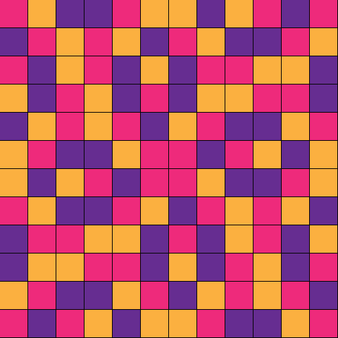
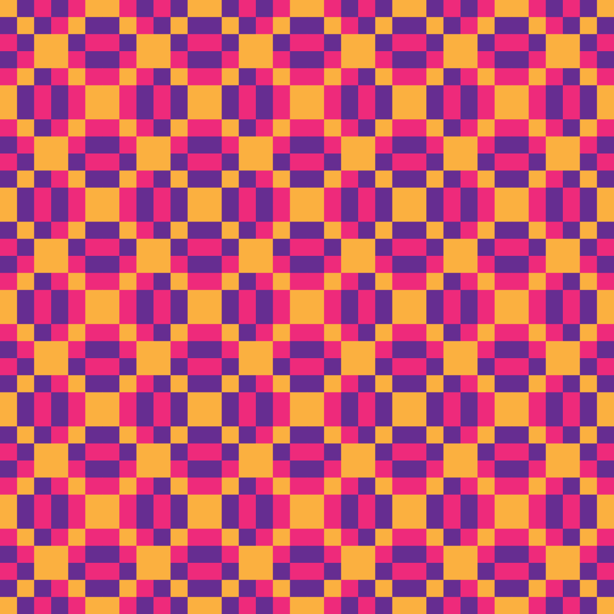
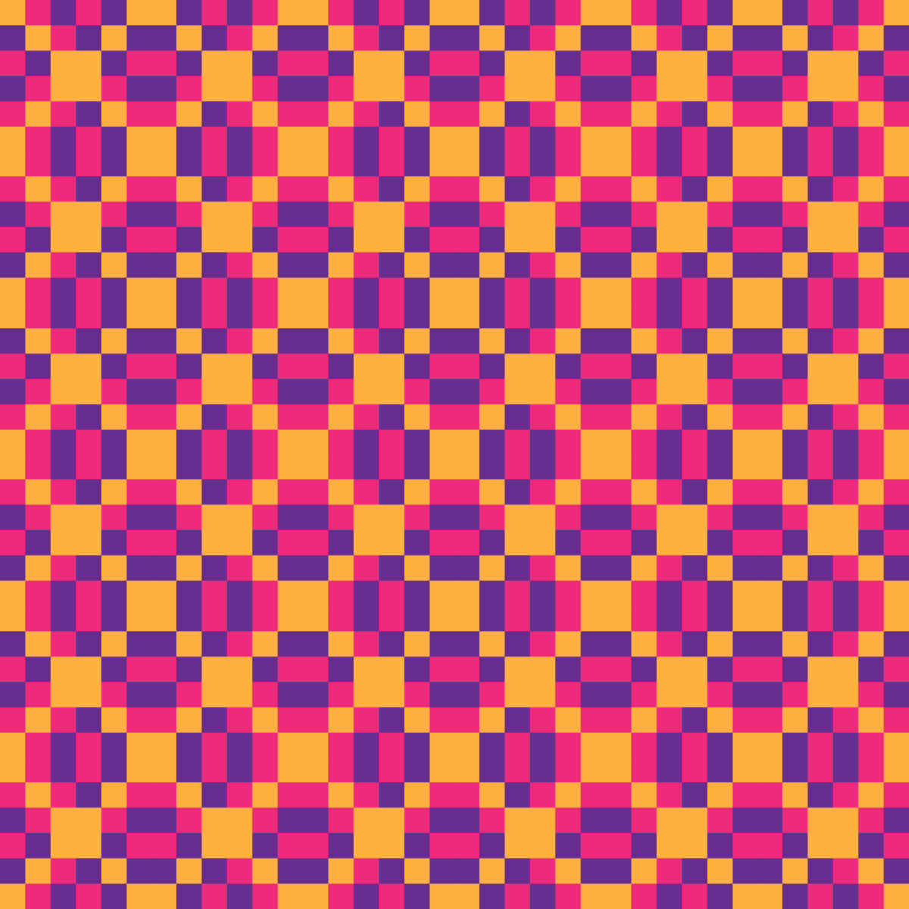
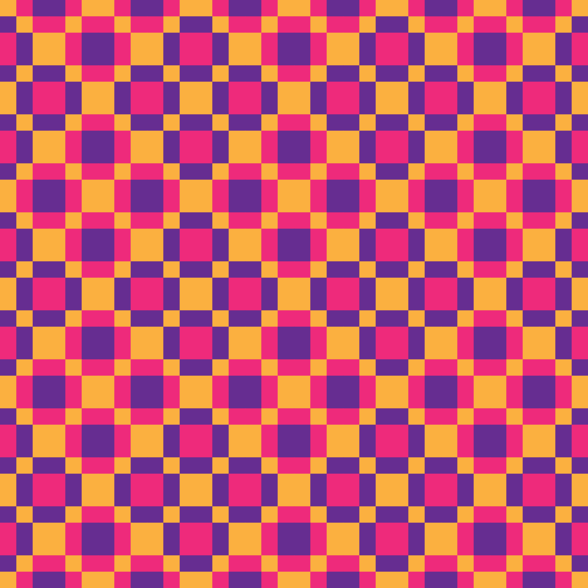
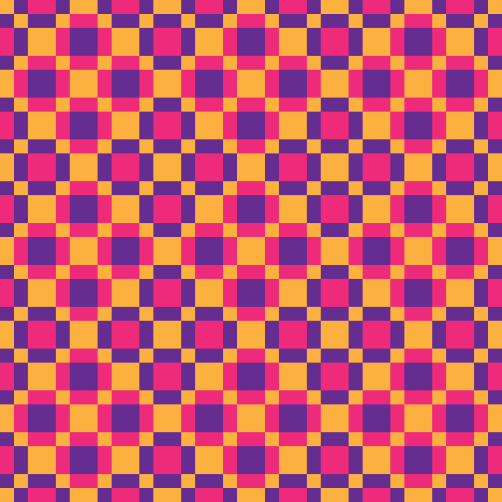
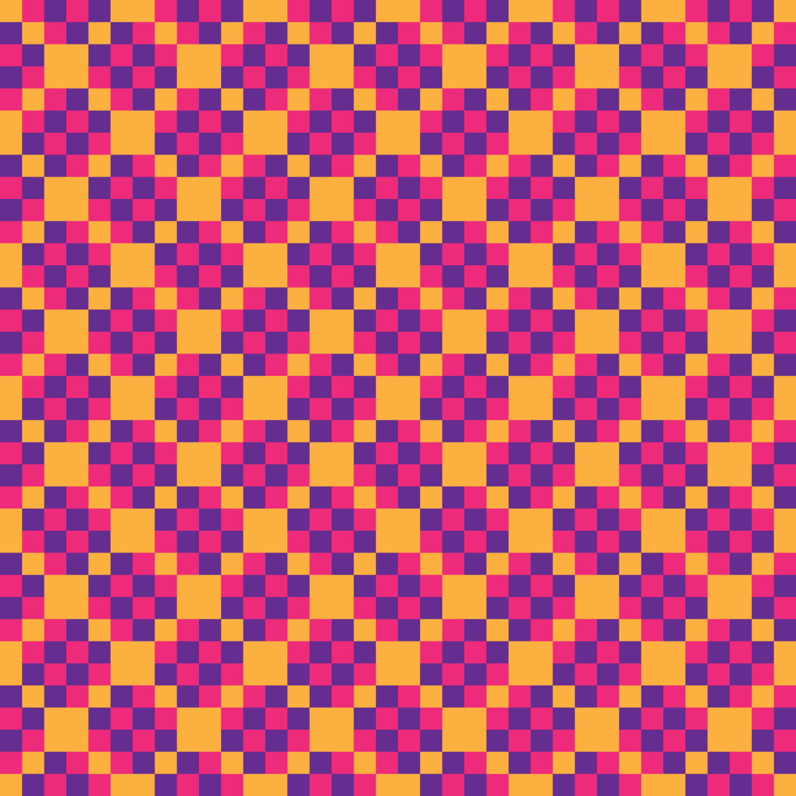
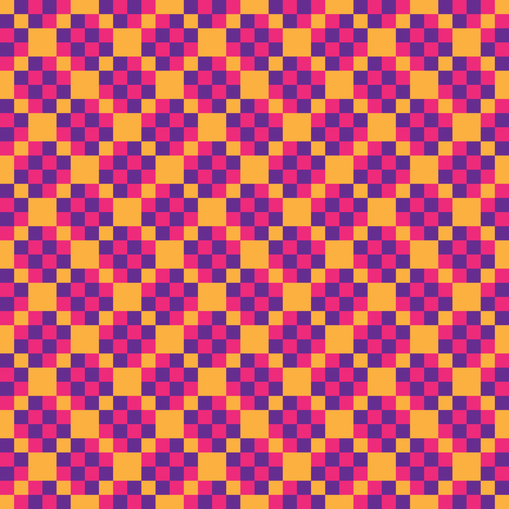
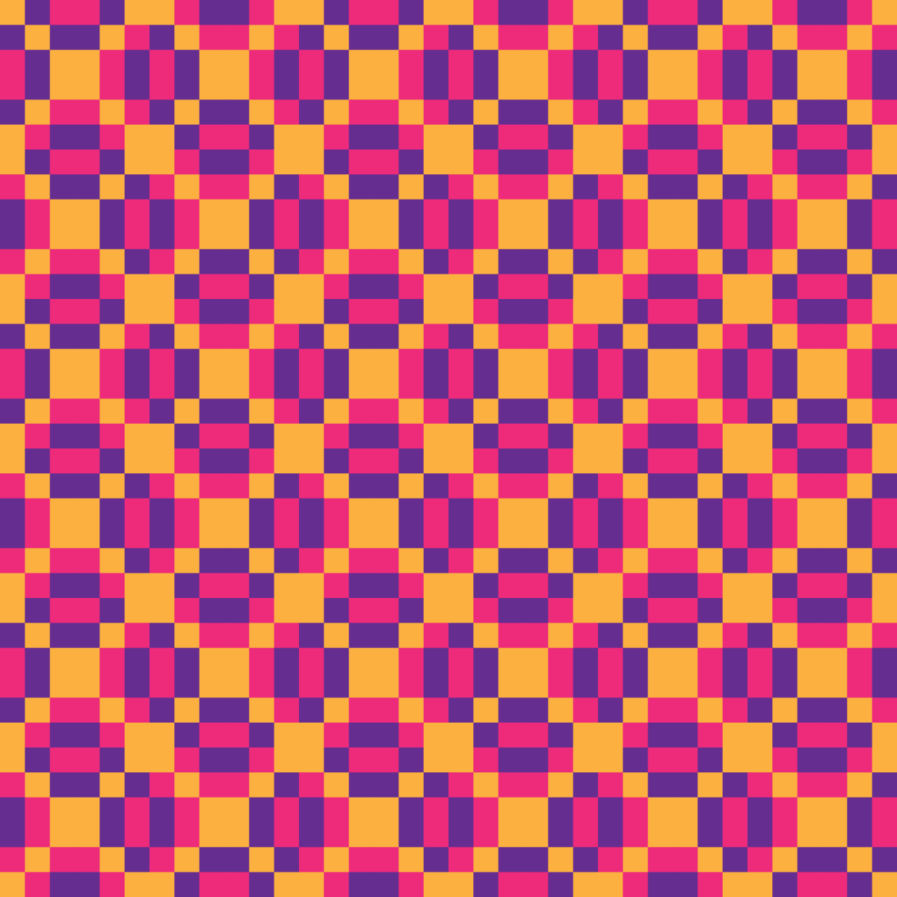
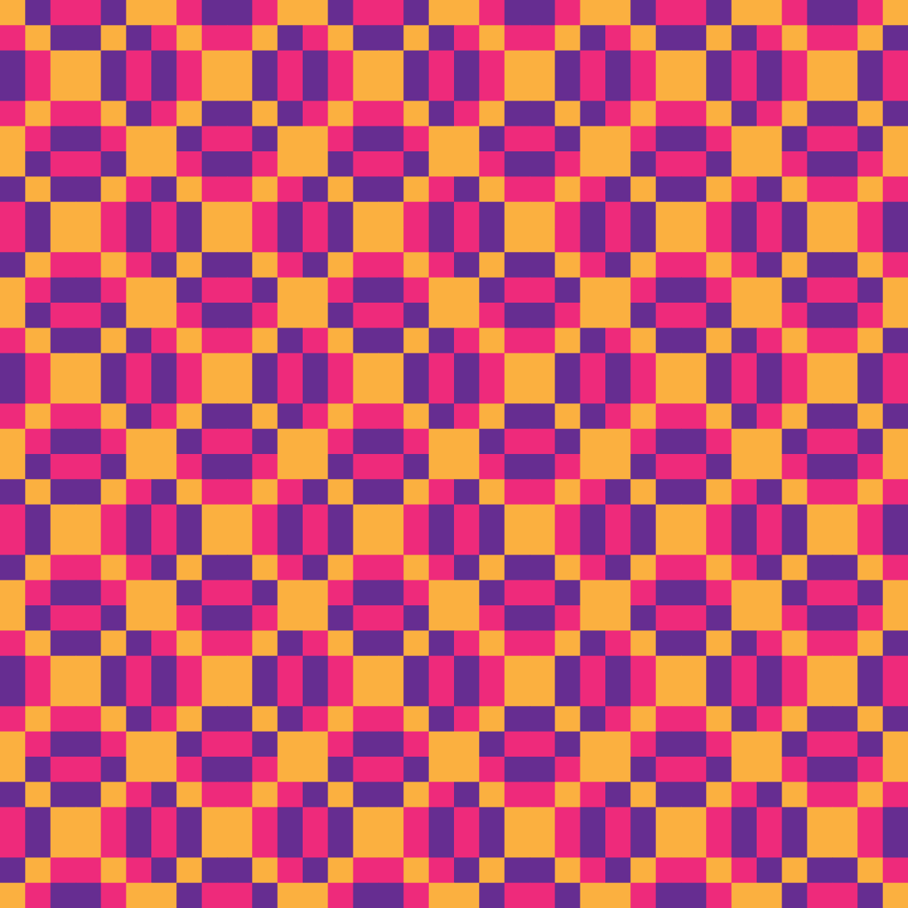

Andere Sprachen: Français · English · Español · ไทย · Italiano · 日本語
Hexagramm 53 — Jian, Die Entwicklung (Nr. 52 der Website)
Binärindex 52 (0 bis 63; „chronologische Nr.“ der Website, Ordnung nach Binärgewichten) · traditionelle King-Wen-Nr. 53 · 漸
Von Anibal Edelberto Amiot — Aktualisiert am 17. November 2026
Übersetzung noch nicht geprüft — wenn Sie einen Fehler finden, melden Sie ihn bitte.

die älteste Tochter
der jüngste Sohn
Auf dem Berg ein Baum: das Bild der allmählichen Entwicklung. Der Baum wächst langsam, Wurzel um Wurzel, Jahresring um Jahresring, ohne je eine einzige Stufe seines Wachstums zu überspringen – eine Geduld, die dem Holz selbst eingeschrieben ist. So hält der Edle in würdiger Tugend Stand und bessert die Sitten: Wahre Entwicklung, wie die des Baumes am Hang, bemisst sich in Jahren, nicht in Tagen.
Wurzel, Stamm, Zweig – ein Schritt nach dem anderen richtet die Achse auf. Kein echtes Wachstum überspringt eine Stufe: Jeder Grad bereitet den nächsten vor, in einer Ordnung, die nichts umkehren kann, ohne alles zu gefährden. Diese Linie sagt, dass die Geduld der allmählichen Entwicklung selbst eine Form von Stärke ist.
Die sechs Linien
Am Fuß der Erde schließt sich die Leere: Was bisher nur eine Öffnung war, beginnt sich zu füllen.
Die empfangende Erde erreicht ihre Fülle: Die stille Aufnahme, die den unteren Teil der Figur trug, wird sich behaupten.
An der Schwelle zwischen Erde und Mensch wankt die Kraft: Was durch Festigkeit wirkte, zögert, bevor es sich wendet.
Im Hören des Menschen füllt sich die Höhlung: Die Bereitschaft, die empfing, wird sich bald behaupten.
Am Platz des Weisen höhlt sich das Volle aus: Die Kraft, die die Figur von der Mitte aus regierte, schickt sich an, sich umzukehren.
Auf dem Gipfel vollendet das Volle seinen Lauf und bricht: Was kulminierte, kann nicht weiter gehen, ohne sich umzukehren.
Quelle: La Livrée d'Hermès, Anibal Amiot — Kapitel 7.1 (S. 81–86). Französische Fassung dieser Seite.
Zu den hier verwendeten Begriffen — magisches Quadrat, Schicht und Wurf, das I Ging — siehe das Lexikon des Projekts.
Die Muster dieses Hexagramms
Dieses Hexagramm ist das binäre Komplement des Hexagramms 54 — Gui Mei, Das heiratende Mädchen (Nr. 11 der Website) (63 − 52 = 11): Seine Muster haben genau dieselbe Form, nur ihre Farben sind vertauscht. Hier die acht Muster des Hexagramms 11 (King-Wen-Nr. 54), eines je zulässiger Familie (Seiten auf Englisch).

Bases — YANG mutant
Bases — YANG
Pair of two — YANG + YIN mutant
Pair of two — YIN mutant + YANG mutant
Pair of two — YIN + YANG
Pair of two — YIN + YANG mutant
Triple — without YANG
Triple — without YANG mutantBenachbarte Hexagramme
61 — Zhong Fu, Innere Wahrheit (Nr. 51 der Website) · 37 — Jia Ren, Die Sippe (Nr. 53 der Website)
Hexagramme mit gemeinsamem Trigramm
Gleiches oberes Trigramm (☴ Xun): 20 — Guan, Die Betrachtung (Nr. 48 der Website) · 42 — Yi, Die Mehrung (Nr. 49 der Website) · 59 — Huan, Die Auflösung (Nr. 50 der Website) · 61 — Zhong Fu, Innere Wahrheit (Nr. 51 der Website) · 37 — Jia Ren, Die Sippe (Nr. 53 der Website) · 57 — Xun, Das Sanfte (Nr. 54 der Website) · 9 — Xiao Chu, Des Kleinen Zähmungskraft (Nr. 55 der Website)
Gleiches unteres Trigramm (☶ Gen): 15 — Qian, Die Bescheidenheit (Nr. 4 der Website) · 62 — Xiao Guo, Des Kleinen Übergewicht (Nr. 12 der Website) · 39 — Jian, Das Hemmnis (Nr. 20 der Website) · 31 — Xian, Die Einwirkung (Nr. 28 der Website) · 52 — Gen, Das Stillehalten (Nr. 36 der Website) · 56 — Lu, Der Wanderer (Nr. 44 der Website) · 33 — Dun, Der Rückzug (Nr. 60 der Website)